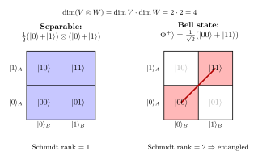

张量积与复合系统 — 两个 qubit 为什么是 4 维?
上一节我们把一个算符在自己的本征基里写成对角形, 把矩阵里看似复杂的耦合一一解开. 那是 "一个" 系统的故事 — 算符作用于一个固定 Hilbert 空间. 但现实里物理系统几乎总是 "复合" 的: 两个电子, 三个光子, 一个原子加一个场模. 单系统的本征基不够用了, 我们需要一个把多个 Hilbert 空间 "拼起来" 的运算. 这个运算不是直和 $\oplus$, 而是张量积 $\otimes$ — 它的特征是维数相乘而不是相加, 它的代价是把缠绕态偷偷塞了进来.
我们从一个最具体的问题开始. 实验台上有两个自旋 1/2 粒子, 编号 A 与 B. A 单独看, 状态空间是 $\mathbb C^2$, 基取 $|\uparrow_A\rangle, |\downarrow_A\rangle$; B 单独看, 状态空间也是 $\mathbb C^2$, 基取 $|\uparrow_B\rangle, |\downarrow_B\rangle$. 现在我问: A 和 B 一起的状态空间是什么? 它有多少维? 它的基是什么?
一、为什么不是直和: 从 "联合分布" 想起
让我们先用一个经典的类比把直和与张量积分开. 设有一个红球, 它要么是红 1 号要么是红 2 号; 一个蓝球, 它要么是蓝 1 号要么是蓝 2 号. 如果我只看 "哪只手里有球", 答案是: 这只手里要么有红 1, 要么有红 2, 要么有蓝 1, 要么有蓝 2 — 4 种 "互斥" 的可能, 状态空间 $\dim = 2 + 2 = 4$, 这是直和 $\mathbb C^2 \oplus \mathbb C^2$.
但若两只手里 "同时" 各有一个球 — 左手红, 右手蓝 — 联合状态就要写成 (左红, 右蓝). 联合状态有几种? 左 2 选 1, 右 2 选 1, 共 $2\times 2 = 4$ 种: (红 1, 蓝 1), (红 1, 蓝 2), (红 2, 蓝 1), (红 2, 蓝 2). 这就是张量积 — 不是 "或", 而是 "和".
量子的两个 qubit 是后一种: A 必有自己的态 (要么向上要么向下要么叠加), B 也必有自己的态, 整体描述需要联合. 联合的基自然由 A 的基与 B 的基 "成对" 给出:
$$ |\uparrow\uparrow\rangle, \quad |\uparrow\downarrow\rangle, \quad |\downarrow\uparrow\rangle, \quad |\downarrow\downarrow\rangle. \tag{1} $$
四个独立基矢, 复合空间 $\dim = 4$. 我们把这种空间记作 $\mathbb C^2 \otimes \mathbb C^2$, 读作 "$\mathbb C^2$ 张量 $\mathbb C^2$".
注意, 单 qubit 已经允许叠加 $\alpha|\uparrow\rangle + \beta|\downarrow\rangle$. 联合空间也允许叠加, 但叠加的对象现在是 4 个基矢, 一般态是
$$ |\Psi\rangle = c_{00}|\uparrow\uparrow\rangle + c_{01}|\uparrow\downarrow\rangle + c_{10}|\downarrow\uparrow\rangle + c_{11}|\downarrow\downarrow\rangle, $$
四个复系数 $c_{ij}$ 满足归一 $\sum|c_{ij}|^2 = 1$. 复合系统的 "信息容量" 比两个单独系统加起来要大得多 — 这正是量子计算可能加速的代数根源.
二、张量积的严格定义
上面用 "成对的基" 给了直觉, 现在收紧定义. 张量积有两种等价的视角: 一种以双线性映射为骨架, 一种以基的乘积为骨架. 两种我们都讲, 但运算上后者更顺手.
视角 A (泛性质): 给定向量空间 $V, W$, 它们的张量积是一个空间 $V\otimes W$ 加上一个双线性映射 $\otimes: V\times W \to V\otimes W$, $(v,w)\mapsto v\otimes w$, 满足: 对任意双线性映射 $B: V\times W \to U$, 存在唯一的线性映射 $\tilde B: V\otimes W \to U$ 使得 $B(v,w) = \tilde B(v\otimes w)$. 一句话: $V\otimes W$ 是 "把双线性变成线性" 的最小目标. 双线性意味着
$$ (\alpha v_1 + \beta v_2)\otimes w = \alpha (v_1\otimes w) + \beta (v_2\otimes w), \quad v\otimes(\alpha w_1 + \beta w_2) = \alpha (v\otimes w_1) + \beta (v\otimes w_2). $$
泛性质保证 $V\otimes W$ 在同构意义下唯一存在.
视角 B (基的乘积): 设 $\dim V = m, \dim W = n$, $\{e_i\}_{i=1}^m$ 是 $V$ 的基, $\{f_j\}_{j=1}^n$ 是 $W$ 的基. 张量积空间 $V\otimes W$ 是由 $mn$ 个形式符号 $e_i\otimes f_j$ 张成的向量空间, 其中 $\otimes$ 满足上面的双线性. 这就给了我们关键的 维数公式:
$$ \dim(V\otimes W) = \dim V \cdot \dim W. \tag{2} $$
对照直和的维数 $\dim(V\oplus W) = \dim V + \dim W$, 张量积是 "乘", 直和是 "加" — 多复合一个系统就是一次乘法, 这是为何 $N$ 个 qubit 的 Hilbert 空间是 $2^N$ 维, 指数大. 经典的 $N$ 比特状态空间只有 $2N$ (比特数线性增长), 而量子是 $2^N$ — 张量积公式 (2) 就是 "量子优势" 的代数源头.
一般向量的张量积: 对任意 $v = \sum_i v_i e_i \in V$ 与 $w = \sum_j w_j f_j \in W$,
$$ v\otimes w = \sum_{i,j} v_i w_j \, e_i\otimes f_j. $$
注意系数是 "外积" $v_i w_j$ — 系数的张量积也是双线性的.
三、内积、算符与可分性的判据
有了空间, 物理还需要内积 (做概率) 和算符 (做演化与测量). 张量积空间的内积按 "因子相乘" 给出:
$$ \langle u_1\otimes u_2 \,|\, v_1\otimes v_2\rangle = \langle u_1|v_1\rangle \cdot \langle u_2|v_2\rangle. \tag{3} $$
由双线性扩展到一般向量. 用基验证: $\langle e_i\otimes f_j | e_k\otimes f_l\rangle = \delta_{ik}\delta_{jl}$ — 4 个基矢两两正交、各自归一, 形成 $V\otimes W$ 的标准正交基. 这与第一性原理是一致的: 联合事件 (A 是 $i$ 且 B 是 $j$) 的振幅是各自振幅的乘积, 模平方便是联合概率, 整把概率论嵌进来了.
算符也按 "各自作用" 张量化:
$$ (A\otimes B)(v\otimes w) = (Av)\otimes(Bw). $$
线性扩展到一般向量. 在基下, 若 $A$ 是 $m\times m$, $B$ 是 $n\times n$, 则 $A\otimes B$ 是 $mn\times mn$ — Kronecker 积. 一个常用恒等式:
$$ (A\otimes B)(C\otimes D) = (AC)\otimes(BD), $$
它告诉我们: 在 $V\otimes W$ 上 "只对 A 系统作用一个算符", 应当写成 $A\otimes I_W$, 不影响 B 因子.
可分态 (separable): 称 $|\Psi\rangle\in V\otimes W$ 可分, 若存在 $|a\rangle\in V$ 与 $|b\rangle\in W$ 使 $|\Psi\rangle = |a\rangle\otimes|b\rangle$. 可分态是 "无关联" 的: A 与 B 各自独立, 联合振幅恰好是因子振幅之积.
缠绕态 (entangled): 不能写成单个 $|a\rangle\otimes|b\rangle$ 的态. 不少人第一次见会问: 难道线性叠加不就把它们连在一起了吗? 关键的, 缠绕指的是 "整体相干, 但因子无法独立指定". 这两点不一致, 才是缠绕.
四、Bell 态: 最小但完整的缠绕例子
我们用一个具体例子彻底厘清可分与缠绕的代数差别. 考虑两个 qubit 系统, 用上面四个基矢 $|00\rangle = |\uparrow\uparrow\rangle$ 等. 取
$$ |\Phi^+\rangle = \frac{1}{\sqrt 2}\big(|00\rangle + |11\rangle\big). $$
这是四个 Bell 态之一. 我们尝试把它写成 $(\alpha|0\rangle_A + \beta|1\rangle_A)\otimes(\gamma|0\rangle_B + \delta|1\rangle_B)$, 看可不可分. 展开:
$$ \alpha\gamma|00\rangle + \alpha\delta|01\rangle + \beta\gamma|10\rangle + \beta\delta|11\rangle. $$
对照 $|\Phi^+\rangle$, 需要
$$ \alpha\gamma = \frac{1}{\sqrt 2},\quad \beta\delta = \frac{1}{\sqrt 2},\quad \alpha\delta = 0,\quad \beta\gamma = 0. $$
由 $\alpha\delta = 0$ 得 $\alpha=0$ 或 $\delta=0$; 但 $\alpha=0$ 与 $\alpha\gamma = 1/\sqrt 2 \neq 0$ 矛盾, $\delta=0$ 与 $\beta\delta = 1/\sqrt 2 \neq 0$ 也矛盾. 所以无解 — $|\Phi^+\rangle$ 不可分, 是缠绕态.

从代数上更深一层看, 缠绕的判据与系数矩阵的秩有关. 写 $|\Psi\rangle = \sum_{ij} c_{ij} |i\rangle_A|j\rangle_B$ 时, 系数构成矩阵 $C = (c_{ij})$. 可分意味着 $c_{ij} = a_i b_j$, 这等价于 $C$ 是秩 1 矩阵. Bell 态 $|\Phi^+\rangle$ 的系数矩阵
$$ C = \frac{1}{\sqrt 2}\begin{pmatrix}1 & 0\\ 0 & 1\end{pmatrix} $$
显然秩为 2, 不是秩 1, 所以缠绕. 矩阵的秩越大, 缠绕越深 — 这就是 Schmidt 分解的舞台.
五、Schmidt 分解: 缠绕的不变量
对任意 $|\Psi\rangle\in V\otimes W$, 存在 $V$ 中的标准正交集 $\{|u_k\rangle\}$ 与 $W$ 中的标准正交集 $\{|v_k\rangle\}$, 以及非负实数 $\sigma_k\geq 0$, 使
$$ |\Psi\rangle = \sum_{k=1}^{r}\sigma_k\, |u_k\rangle\otimes|v_k\rangle. \tag{4} $$
$\sigma_k$ 称作 Schmidt 系数, 非零 $\sigma_k$ 的个数 $r$ 称作 Schmidt 秩. 这个分解从代数上看就是系数矩阵 $C$ 的奇异值分解 (SVD): $C = U\Sigma V^\dagger$, 其中 $\Sigma$ 是对角的奇异值矩阵, 把 $|u_k\rangle$ 与 $|v_k\rangle$ 取作 $U, V$ 的对应列即可.
Schmidt 秩 $r=1$ 当且仅当态可分; $r\geq 2$ 是缠绕. Schmidt 系数本身在 "局部酉变换" 下不变 — 即在 A 子系统与 B 子系统上各自做幺正操作, 不能改变 $\{\sigma_k\}$. 所以 Schmidt 系数是缠绕的真正不变量, 不会被 "局部" 操作稀释.
对 Bell 态 $|\Phi^+\rangle$, $C$ 的奇异值是 $\{1/\sqrt 2, 1/\sqrt 2\}$. 两个相等的 Schmidt 系数 — 这是最大缠绕态. 这种 "对称且无偏" 的结构正是为什么 Bell 态在量子密钥、量子隐形传态、Bell 不等式实验中扮演核心角色.
顺带一提, Schmidt 分解还自动给出约化密度矩阵: 对子系统 A 取部分迹, $\rho_A = \Tr_B|\Psi\rangle\langle\Psi| = \sum_k \sigma_k^2 |u_k\rangle\langle u_k|$, 它的本征值正是 $\sigma_k^2$. 缠绕越深, $\rho_A$ 越 "混合", 子系统熵 $S(\rho_A) = -\sum_k \sigma_k^2\log\sigma_k^2$ 越大. 单看 A 子系统时, 缠绕表现为 "信息缺失" — 这是后续量子信息论的入口, 我们留到下一部分再展开.
六、物理回响与历史
张量积是无声的脚手架, 在卷一到卷三随处出现, 只是常被读者当成 "理所当然".
卷三第 30 节《量子密钥》中的 BB84 协议与 Ekert 1991 的 EPR-pair 协议, 全部建立在两 qubit 的 Bell 态上. Alice 与 Bob 分享一个 $|\Phi^+\rangle$, 各自在本地子系统上做测量 — Schmidt 分解里 $\sigma_k$ 相等的对称性, 保证两人无论选哪组基测量, 结果完美相关. 没有张量积, EPR 对就无从写起, Bell 不等式也无从谈起.
卷三第 19 节《波粒二象》里, 单光子穿过双缝后的态 $|1\rangle + |2\rangle$ 看起来是单系统的叠加, 但若考察 "光子 + which-path 探测器", 联合态就成了 $|1\rangle|D_1\rangle + |2\rangle|D_2\rangle$ — 这是探测器与光子被张量积缠在一起. 一旦测量探测器, 光子干涉立刻消失. 互补原理在张量积语言下就是 "把信息泄露给环境后, Schmidt 秩 ≥ 2, 干涉项被对角化". 退相干 (decoherence) 的整个理论, 正是张量积空间里 "系统 ⊗ 环境" 的故事.
卷二第 26 节《Maxwell 妖》谈信息熵与热力学第二定律, 那里 "妖知道粒子的状态" 实质上是 "妖与粒子缠绕了". 一旦把妖与粒子放在张量积空间, 缠绕产生的关联熵正好抵掉妖原以为获得的熵减 — Landauer 擦除原理就在这里关上账本.
历史的源头. 张量与张量积形式化的算术起步可以追溯到 1845 年 Cayley 引入矩阵的 Kronecker-style 乘积, 以及 1880 年代 Kronecker 系统化的双指标外积运算; 完整的 "向量空间张量积" 抽象在 20 世纪上半叶由 Bourbaki 学派整理为代数学标准件. 物理这一边, 1935 年 Schrödinger 在他对 EPR 1935 论文的回应中创造了 "Verschränkung" 一词 — 中文译作 "缠绕", 英文译作 "entanglement". 他写道: "我会说这不是量子力学的某一个特征, 而是它的那个特征 — 这一点强迫我们彻底告别经典思维." 同一年 Schrödinger 还用一只猫把这件事推向了大众. 90 年后我们终于在张量积代数里看清: 缠绕不是神秘, 它就是 "系数矩阵秩 ≥ 2".
小结
张量积 $V\otimes W$ 是把双线性变成线性的最小目标空间, 维数公式 (2) 让 $N$ qubit 的 Hilbert 空间膨胀到 $2^N$ 维, 这是量子优势的代数根源. 内积式 (3) 与算符 $A\otimes B$ 给整套结构装上了概率与演化. 可分态对应秩 1 系数矩阵, 缠绕态秩 $\geq 2$, Schmidt 分解 (4) 给出缠绕的不变量. 我们重做了 Bell 态 $|\Phi^+\rangle$ 不可分的代数证明, 又看到它在卷三 BB84/EPR、双缝退相干、Maxwell 妖账本里的多次现身. Schrödinger 1935 的命名只是这个故事的开头. 下一节我们离开 "复合空间", 转向 "对称性的代数" — 群论, 那里张量积会再一次出现, 这次以表示张量积的姿态, 解释为什么两个自旋 1/2 合成一个自旋 0 加一个自旋 1.
▲